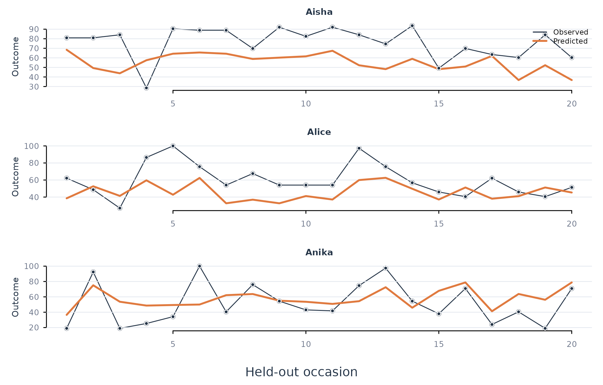

Analytic question
fit_rolling() estimates forecasting performance across
several points in time. The function takes a panel, outcome, predictors,
person and time columns, a model family, and a rolling schedule. It
returns the standard idiographic_fit tables with a fold
identifier added to predictions.
fit_rolling() trains on observations before each origin
and predicts the next assessment block. The origin then moves forward by
step observations. This expanding-window design evaluates a
model under repeated historical forecasts instead of one terminal
hold-out (Tashman
2000).
Define the rolling schedule
fit_rolling() fits pooled linear models at four origins.
Each fold predicts the next five observations per learner. The default
initial window uses all earlier rows that can accommodate the requested
schedule. Table 1 pools the forecast errors across folds.
rolling_fit <- fit_rolling(analysis_data, y = "effort", x = c("efficacy", "monitoring"), id = "name", method = "lm", time = "day", scope = "pooled", folds = 4, assess = 5)
metrics(rolling_fit, overall = TRUE)
#> scope model estimator subject subgroup n rmse mae bias
#> 1 pooled lm native .overall .all 240 23.78501 19.45259 1.371596
#> r_squared
#> 1 0.2761391fit_rolling() evaluates 240 forecasts in Table 1. This
count equals four folds, five test occasions, and 12 learners. The
pooled linear model has an RMSE of about 23.8 and a positive mean error
of about 1.4. These metrics summarize repeated forward predictions
rather than in-sample fit.
Inspect fold-level predictions
predictions() returns one row per forecast with the
original row identifier, person, observed value, predicted value, and
fold. Table 2 limits printing through the accessor’s n
argument.
predictions(rolling_fit, n = 12)
#> scope model estimator subject subgroup row observed predicted residual
#> 1 pooled lm native Aisha .all 137 80.95238 68.45741 12.494971
#> 2 pooled lm native Aisha .all 138 80.95238 49.32807 31.624313
#> 3 pooled lm native Aisha .all 139 84.12698 43.85888 40.268099
#> 4 pooled lm native Aisha .all 140 28.57143 57.50990 -28.938475
#> 5 pooled lm native Aisha .all 141 90.47619 64.34455 26.131636
#> 6 pooled lm native Alice .all 293 62.16216 38.52866 23.633499
#> 7 pooled lm native Alice .all 294 48.64865 52.61346 -3.964814
#> 8 pooled lm native Alice .all 295 27.02703 41.37232 -14.345294
#> 9 pooled lm native Alice .all 296 86.48649 59.62317 26.863316
#> 10 pooled lm native Alice .all 297 100.00000 42.74647 57.253525
#> 11 pooled lm native Anika .all 449 18.98734 36.55862 -17.571282
#> 12 pooled lm native Anika .all 450 92.40506 75.07980 17.325262
#> fold
#> 1 1
#> 2 1
#> 3 1
#> 4 1
#> 5 1
#> 6 1
#> 7 1
#> 8 1
#> 9 1
#> 10 1
#> 11 1
#> 12 1predictions() shows that each row belongs to a specific
forecast origin in Table 2. The fold column permits error review by
historical period without reaching into the fitted object.
Plot forecast trajectories
plot_predictions() draws observed and predicted values
in row order for selected learners. Figure 1 uses three learner
panels.
plot_predictions(rolling_fit, scope = "pooled", n_subjects = 3)
Figure 1. Observed effort and pooled rolling-origin predictions for three learners.
Figure 1 shows where the pooled forecast follows or misses each learner’s held-out trajectory. The plot retains person labels even though one coefficient vector is fitted at the pooled scope.
Assumptions and failure checks
fit_rolling() requires ordered observations and a
schedule that fits the shortest person series. The function stops when
initial, assess, step, and
folds require more rows than are available. Missing
predictor or outcome values can reduce usable rows within a fold.
fit_rolling() can tune machine-learning models inside
each fold. Validation rows are taken from that fold’s training period.
The assessment block remains unseen during tuning. Overlapping
assessment blocks occur when step is smaller than
assess; metrics then count some time regions more than
once.
When to use which
fit_rolling() is appropriate for repeated prospective
evaluation. fit_lm(), fit_glm(), and
fit_ml() use one terminal hold-out and are appropriate for
a single train-test comparison. Rolling network functions address
time-varying multivariate systems and have a different result
contract.